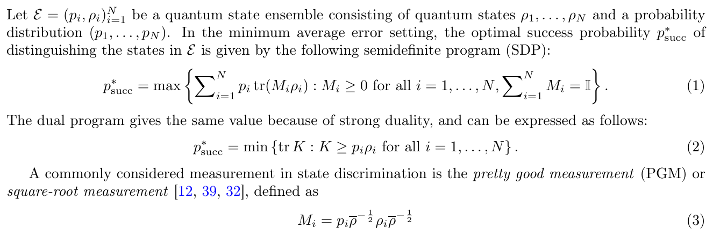
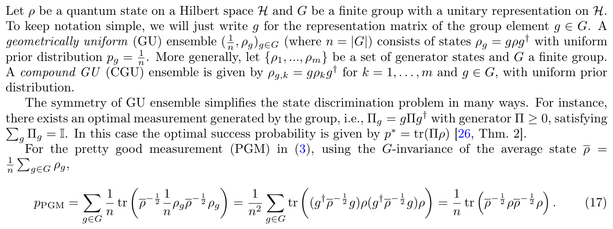
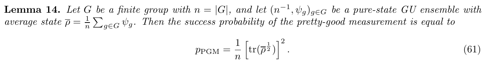
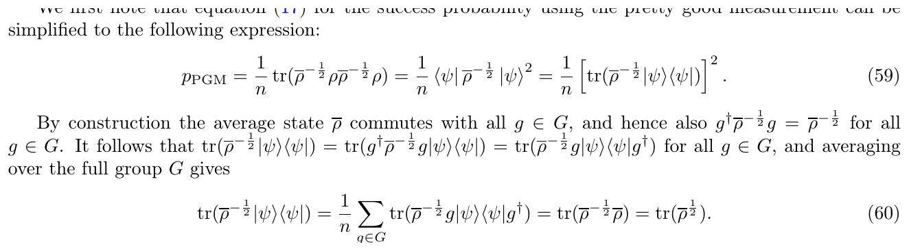
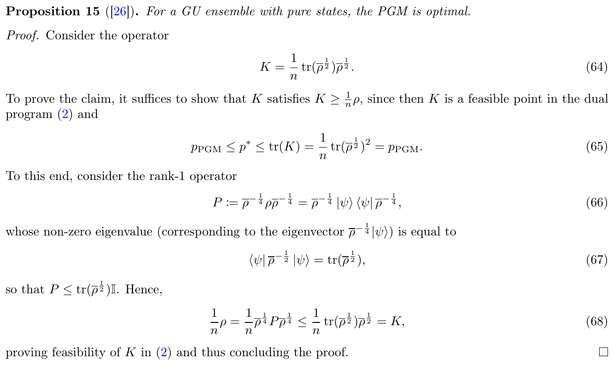
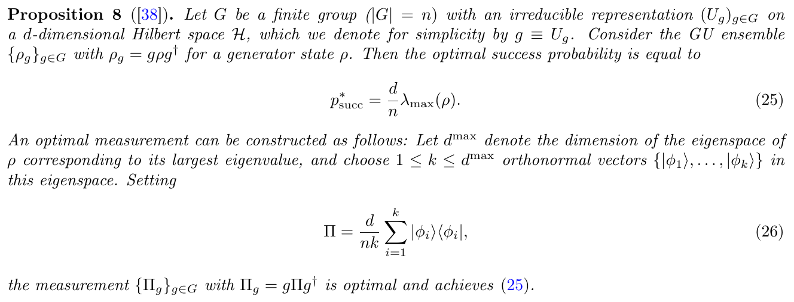
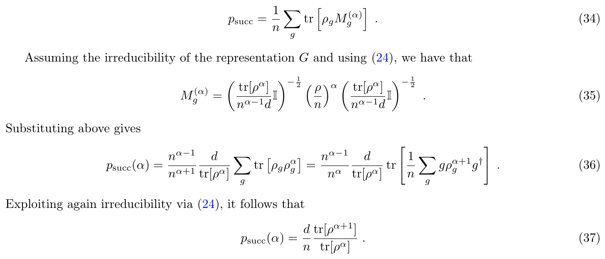
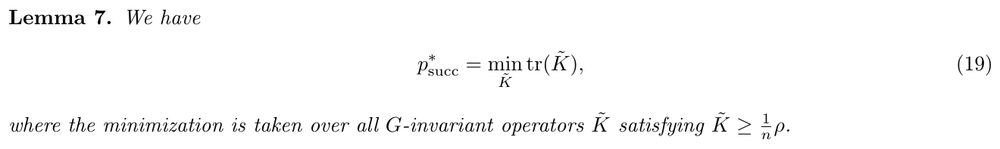
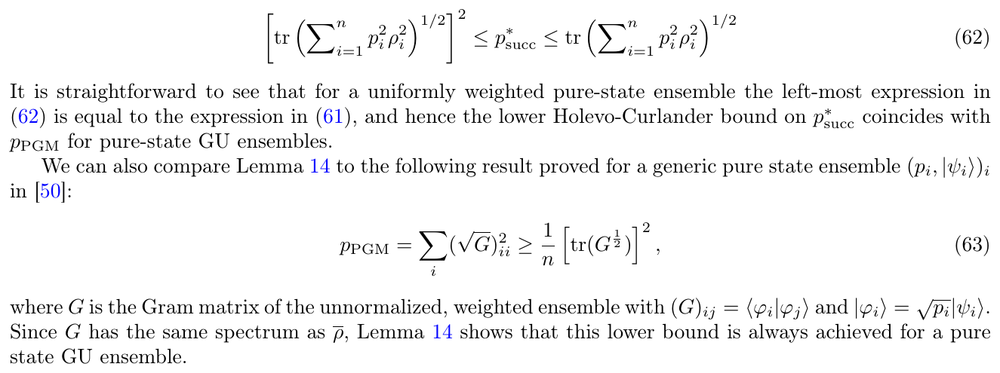
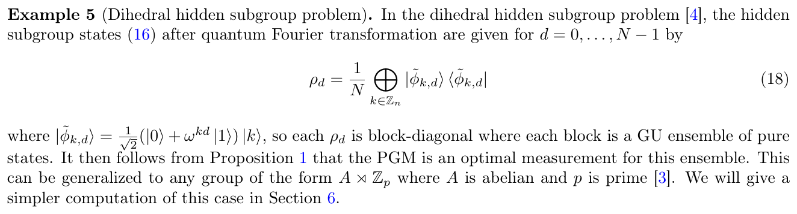

Module 11 · Symmetric and geometrically uniform states
The group Z_M, circulant Gram matrices, optimal SRM and coherent PSK
- Describe a GU ensemble and its group
- Compute Gram eigenvalues by the DFT
- Compute the SRM P_e of coherent PSK
- Recognise when the SRM is no longer optimal
📚 Source documents of this module (each file checked against its actual content)
| File in the archive | Paper (verified against its content) | Pages | Status | Link | Used in this module |
|---|---|---|---|---|---|
| Ban_Hirota_1997_Symmetric_Quantum_States.pdf | Optimum measurements for discrimination among symmetric quantum states and parameter estimation M. Ban, K. Kurokawa, R. Momose, O. Hirota · 1997 · Int. J. Theor. Phys. 36(6), 1269-1288 | ? | No extractable text | No public link (get the file from the group shared folder) | The file is actually a Springer web page (HTML) with only the abstract; no content extracted. |
| Geometrically_Uniform_States_Discrimination.pdf | On the distinguishability of geometrically uniform quantum states J. Zhou, S. Chessa, E. Chitambar, F. Leditzky · 2026 · arXiv:2501.12376v2 [quant-ph] | 24 | Partly read (long book) | DOI · arXiv | Read pp. 1-13, 17-20 and the references; the README misstates the title. Duplicate at F_FUTURE_DIRECTIONS/.../Zhou2025_*.pdf. |
Lecture (slides)
Use the ← → keys or the buttons; ⛶ opens full-screen presentation.
The minimum-error discrimination problem
- \(p_i,\rho_i\)prior and state number \(i\)
- \(M_i\)POVM element, \(M_i\ge0\), \(\sum M_i=\mathbb I\)
- \(K\)dual variable dominating every \(p_i\rho_i\)
Strong duality gives the same value for both problems (Zhou et al., Eq. (1)-(2), p. 3). The error probability is \(P_e=1-p^*_{\rm succ}\).
SDP, duality and the square-root measurement

Nguồn: Zhou, Chessa, Chitambar, Leditzky, arXiv:2501.12376v2, 2026, Eq. (1)-(3), p. 3
The PGM (also called SRM) takes \(M_i=p_i\bar\rho^{-1/2}\rho_i\bar\rho^{-1/2}\) with \(\bar\rho=\sum_ip_i\rho_i\); for GU sets it will have a closed form.
Geometrically uniform ensembles
- \(G\)finite group with unitary representation \(g\)
- \(\rho\)generator state
- \(\{\rho_g\}\)equiprobable states
Coherent PSK: \(G=\mathbb Z_M\), \(U=e^{i2\pi\hat N/M}\), \(|\alpha_k\rangle=U^k|\alpha\rangle=|\alpha e^{i2\pi k/M}\rangle\) (Zhou et al., Sec. 3, p. 6).
GU definition and PGM in terms of the generator

Nguồn: Zhou, Chessa, Chitambar, Leditzky, arXiv:2501.12376v2, 2026, Mục 3, Eq. (17), p. 6
Because \(\bar\rho\) commutes with every \(g\): \(p_{\rm PGM}=\tfrac1n{\rm tr}(\bar\rho^{-1/2}\rho\bar\rho^{-1/2}\rho)\).
The circulant Gram matrix
- \(\bar n=|\alpha|^2\)mean photon number
- \(g_k\)inner product \(\langle\alpha_0|\alpha_k\rangle\)
- \(|g_k|^2\)\(e^{-4\bar n\sin^2(\pi k/M)}\)
For \(M=2\): \(g_1=e^{-2\bar n}\), matching the BPSK overlap \(e^{-4\bar n}\) after squaring. The exponent coefficient is \(4\bar n\sin^2\), not \(2\bar n\sin^2\).
Timeline of the theory of symmetric sets
The group Z_M and its reducible representation
- \(U^M=\mathbb I\)generates \(\mathbb Z_M\)
- \(\mathcal H_m\)the \(U\)-eigenspace with eigenvalue \(e^{i2\pi m/M}\)
The representation is reducible, so Proposition 8 (irreducible) does not apply directly; we use the block structure (Proposition 1, p. 4) or the Gram solution. For pure states \(|\alpha_k\rangle\) spans at most \(M\) dimensions.
Gram eigenvalues from the DFT
- \(\lambda_m\)\(m\)-th eigenvalue of \(G\)
- \(F\)unitary discrete Fourier matrix
- \(\sum_m\lambda_m\)\(={\rm tr}\,G=M\)
No numerical diagonalisation is needed: the \(M\) eigenvalues are the DFT of one row, costing \(O(M\log M)\).
Eigenvalues as residue-grouped Poisson masses
- \(\tfrac{e^{-\bar n}\bar n^n}{n!}\)Poisson probability of \(n\) photons
- \(n\equiv m\)photon numbers grouped by residue mod \(M\)
It follows from \(g_k=\sum_np_ne^{i2\pi nk/M}\) and the sum over roots of unity. For \(M=2\): \(\lambda_{0,1}=1\pm e^{-2\bar n}\); all \(\lambda_m\ge0\) and \(\sum_m\lambda_m=M\).
SRM and the diagonal of the Gram root
- \(|\mu_k\rangle\)SRM measurement vector, orthonormal
- \((\sqrt G)_{kk}\)diagonal entry, identical for all \(k\)
- \(P_c\)probability of a correct guess
Because \(\sqrt G\) is circulant too, \((\sqrt G)_{kk}=\tfrac1M\sum_m\sqrt{\lambda_m}\) for every \(k\).
The P_e formula in eigenvalues
- \(\lambda_m\)eigenvalues from the previous slides
- \(M=2\)\(\Rightarrow\tfrac12\big(1-\sqrt{1-e^{-4\bar n}}\big)\), exactly Helstrom
- \(\bar n\to\infty\)\(\lambda_m\to1,\ P_e\to0\)
This is the module’s central formula: one DFT, \(M\) square roots, one squared sum. For a pure set it is also the optimal \(P_e\) (next slides).
Lemma 14 and the closed form of the PGM

Nguồn: Zhou, Chessa, Chitambar, Leditzky, arXiv:2501.12376v2, 2026, Lemma 14, Eq. (61), p. 13
Eq. (61): \(p_{\rm PGM}=\tfrac1n[{\rm tr}\,\bar\rho^{1/2}]^2\). The spectrum of \(\bar\rho\) is \(\lambda_m/M\), so \({\rm tr}\bar\rho^{1/2}=\sum_m\sqrt{\lambda_m}/\sqrt M\) and we recover \(1-P_e\) from the previous slide.
The group-averaging step

Nguồn: Zhou, Chessa, Chitambar, Leditzky, arXiv:2501.12376v2, 2026, Eq. (59)-(60), p. 12
The key step (60): \({\rm tr}(\bar\rho^{-1/2}|\psi\rangle\langle\psi|)=\tfrac1n\sum_g{\rm tr}(\bar\rho^{-1/2}g|\psi\rangle\langle\psi|g^\dagger)={\rm tr}\,\bar\rho^{1/2}\).
Optimality of the PGM via a dual certificate

Nguồn: Zhou, Chessa, Chitambar, Leditzky, arXiv:2501.12376v2, 2026, Prop. 15, Eq. (64)-(68), p. 13
BPSK worked step by step
- \(\sqrt{1.3679}+\sqrt{0.6321}\)\(1.1696+0.7951=1.9647\)
- \(1.9647^2/4\)\(0.9650\)
- \(P_e\)\(1-0.9650=0.0350\)
Check with Helstrom: \(\tfrac12(1-\sqrt{1-e^{-2}})=0.03506\). The two agree to 15 digits (verify script).
QPSK example with four eigenvalues
- \(\lambda_m\)1.532868, 1.483784, 0.737803, 0.245545
- \(\sum\lambda_m\)4.000000 \(=M\)
- \(P_e\)0.09242142
| Method | \(P_e\) |
|---|---|
| SRM via DFT | 0.09242142 |
| SRM via matrix root | 0.09242142 |
| Optimal SDP (cvxpy/SCS) | 0.09242142 |
The equilateral-triangle constellation
- \(\sum\lambda_m\)3
- \(|g_1|^2=e^{-4\bar n\sin^2(\pi/3)}\)0.0498
- \(P_c\)0.971359
Three states \(120^\circ\) apart are easier to tell apart than four states \(90^\circ\) apart at the same \(\bar n\): 0.0286 versus 0.0924.
Error probability by M and photon number
| \(\bar n\) | \(M=2\) | \(M=3\) | \(M=4\) | \(M=8\) |
|---|---|---|---|---|
| 0.25 | 0.10247 | 0.26882 | 0.41870 | 0.70387 |
| 0.5 | 0.03506 | 0.13098 | 0.26174 | 0.60654 |
| 1 | 0.00460 | 0.02864 | 0.09242 | 0.44881 |
| 2 | 0.00008 | 0.00123 | 0.00955 | 0.22297 |
| 4 | 0.00000 | 0.00000 | 0.00017 | 0.05301 |
Table of \(P_e^{\rm SRM}(M,\bar n)\) from \(P_e=1-(\sum\sqrt{\lambda_m}/M)^2\). \(P_e\) grows with \(M\) and falls with \(\bar n\); \(M=8\) needs \(\bar n\gtrsim4\) to drop below 6%.
Figures computed in data/verify/m11_verify.py, section 4.
Energy threshold for a one-in-a-thousand error
- \(\bar n^*\)found by bisection on the monotone \(P_e\)
- \(E_b\)photons per bit
| M | \(\bar n^*\) | \(E_b\) |
|---|---|---|
| 2 | 1.3806 | 1.3806 |
| 3 | 2.0675 | 1.3044 |
| 4 | 3.1074 | 1.5537 |
| 8 | 10.6118 | 3.5373 |
A numeric example with a mixed generator
- \(n=9\)9 operators \(X^aZ^b\), an irreducible representation
- \(\rho\)random mixed state (seed 7), spectrum 0.7354 / 0.1976 / 0.0670
| \(\alpha\) | 1 | 2 | 4 | 8 | 32 |
|---|---|---|---|---|---|
| \(p_{\rm succ}(\alpha)\) | 0.194795 | 0.231456 | 0.244199 | 0.245139 | 0.245144 |
The \(\alpha=32\) column almost reaches \(p^*\); the SDP gives 0.245144 and the directly computed power-PGM matches Eq. (37).
Trap: factor 2 versus 4 in the overlap
- \(k=1,M=4\)\(e^{-4\cdot1\cdot\frac12}=e^{-2}=0.1353\)
- \(M=2\)\(e^{-4\bar n}\)
Mixed generators: the Holevo formula

Nguồn: Zhou, Chessa, Chitambar, Leditzky, arXiv:2501.12376v2, 2026, Prop. 8, Eq. (25)-(26), p. 8
The optimal measurement is \(\Pi=\tfrac d{nk}\sum_{i\le k}|\phi_i\rangle\langle\phi_i|\) on the top eigenspace, not the SRM.
The PGM is suboptimal for mixed states

Nguồn: Zhou, Chessa, Chitambar, Leditzky, arXiv:2501.12376v2, 2026, Eq. (34)-(37), p. 9
For a pure generator \({\rm tr}\rho^{\alpha+1}={\rm tr}\rho^\alpha\) and the PGM is optimal; for a mixed one \(p_{\rm succ}(\alpha)\lt p^*\) for every finite \(\alpha\).
A mixed GU set under Gamma-Gamma turbulence
- \(f_{\rm GG}(I)\)Gamma-Gamma density, \(\mathbb E[I]=1\)
- \(U^k\)still the group \(\mathbb Z_M\): the set stays GU but mixed
| \(\sigma_R^2\) | \(P_e\) SRM | \(P_e\) SDP | mean of \(P_e(\bar nI)\) |
|---|---|---|---|
| 0.1 | 0.126395 | 0.112613 | 0.111160 |
| 0.3 | 0.169599 | 0.142643 | 0.139150 |
| 1.0 | 0.235291 | 0.194005 | 0.188452 |
| no fading | 0.092421 | 0.092421 | 0.092421 |
(illustration) \(M=4,\bar n=1\), quadrature on \(\log I\), \(d=24\); Gamma-Gamma parameters from the project’s Andrews-Phillips formulas; no receiver noise. Section 7 of the verify script.
Twirling and the invariant dual problem

Nguồn: Zhou, Chessa, Chitambar, Leditzky, arXiv:2501.12376v2, 2026, Lemma 7, Eq. (19), p. 7
- \(\tilde K\)block-diagonal over the residue classes \(m\)
Two lower bounds that coincide with the PGM

Nguồn: Zhou, Chessa, Chitambar, Leditzky, arXiv:2501.12376v2, 2026, Eq. (62)-(63), p. 13
For a pure GU set the lower bounds (62) and (63) both equal \(p_{\rm PGM}\), so equality holds.
Block structure and the hidden subgroup problem

Nguồn: Zhou, Chessa, Chitambar, Leditzky, arXiv:2501.12376v2, 2026, Example 5, Eq. (18), p. 7
Application to optical PSK constellations
Zhou et al. note that Krovi et al. (2015) applied a representation-theoretic formula for pure GU sets to optical communication (Sec. 1, p. 2). For coherent PSK the optimal measurement is the SRM and \(P_e\) depends only on the \(\lambda_m\) of the central equation.
- \(d\)Fock truncation dimension
Constellations compared by photons per bit
- \(\bar n^*\)1.381, 2.067, 3.107, 10.612
- \(P_e\le10^{-3}\)shared target
The triangle (M=3) spends the fewest photons per bit; 8-PSK costs more than twice as much. This is the quantitative design conclusion under the quantum limit.
SRM compared with the SDP limit
| Quantity | SRM (Gram) | Optimal SDP | Remark |
|---|---|---|---|
| M=2. n̄=0.5 | 0.03506325 | 0.03506325 | = Helstrom |
| M=3, n̄=1 | 0.02864058 | 0.02864058 | pure GU |
| M=4, n̄=1 | 0.09242142 | 0.09242142 | pure GU |
| M=4. n̄=0.3 | 0.38171469 | 0.38171469 | pure GU |
In every pure case the SRM and SDP agree to eight digits, as Proposition 15 predicts. The two-state Helstrom bound is the \(M=2\) case: \(P_e=\tfrac12(1-\sqrt{1-e^{-4\bar n}})\).
One GU framework for many problems
- Example 4: port-based teleportation, group \(S_n\) (p. 6).
- Example 5: dihedral hidden subgroup, \(\rho_d=\tfrac1N\bigoplus_k|\tilde\phi_{k,d}\rangle\langle\tilde\phi_{k,d}|\) (p. 7).
- Example 6: quantum coupon collector, \(n!/k!\) states (p. 7).
- \(\Pi\)generator of the POVM, \(\sum_g\Pi_g=\mathbb I\)
Scope of validity and data limits
- The \(P_e\) formula in \(\lambda_m\) holds for pure sets with equal priors; with turbulence or receiver noise the states are mixed and Proposition 8 or an SDP is needed.
- The 5%, 8% and 12% figures in the source README are not in Zhou et al.; do not use them.
- The Ban-Hirota 1997 file in the repository is only a web page with an abstract, so its body is unread.
- \(P_e^{\rm real}\)any receiver built in the lab
Summary of the module’s formulas
- \(g_k\)\(e^{-\bar n(1-e^{i2\pi k/M})}\)
- \(M=2\)back to BPSK Helstrom
- \(\sum\lambda_m\)\(M\)
Links: m07 (SRM), m06 (QPSK), m05 (three states), m12 (bounds and limits).
Detailed notes
Theoretical and historical background
Quantum state discrimination starts with Helstrom (1976) and Holevo (1973). Symmetric ensembles were first handled by Davies (1978) for accessible information, then by Ban, Kurokawa, Momose and Hirota (1997) for minimum error, and Eldar, Megretski and Verghese (2004) proved that a covariant measurement is always optimal. Zhou et al. (2025) rewrite the proofs in representation-theoretic language and find examples where the PGM is suboptimal.
Worked examples
\(M=2,\bar n=0.5\): \(\lambda=1\pm e^{-1}\), \(P_e=1-\tfrac14(1.1696+0.7951)^2=0.0350\). Matches Helstrom.
\(M=4,\bar n=1\): four \(\lambda\) from the example slide, \(\sum\sqrt\lambda=3.8107\), \(P_e=0.09242\).
A circulant matrix represents circular convolution; the convolution theorem says the DFT diagonalises it, which is why \(\lambda_m\) is a DFT of one row. (illustration) The filter \(h=(1,\,0.5,\,0,\,0.5)\) has response \(1+\cos(2\pi m/4)\): \(2,1,0,1\).
(assumption) Eight equally spaced elements on a ring give a circulant Gram matrix; the DFT yields azimuthal modes, the same structure as \(\mathbb Z_8\) for 8-PSK.
\(p^*=\tfrac39\cdot0.735431=0.245144\), the PGM reaches only 0.194795 (\(\alpha=1\)); the generator is mixed so the PGM is suboptimal.
\(\sigma_R^2=0.3\): \(\alpha_{GG}=8.43,\beta_{GG}=6.92\); SRM 0.1696, SDP 0.1426, no fading 0.0924. (illustration, no receiver noise.)
Pitfalls
- Confusing \(|g_k|\) with \(|g_k|^2\): factor 2 versus 4.
- Forgetting to divide by \(M\) in \((\sum\sqrt\lambda/M)^2\).
- Using the PGM on mixed states and calling it optimal.
- A flipped DFT sign relabels \(\lambda_m\); the set is unchanged so \(P_e\) is unchanged.
From plain words to technique
Plain words: equally spaced points on a circle look the same from every direction, so a rotation-symmetric measurement is best. Technique: circulant Gram matrix, DFT, sum of square roots. Table: \(P_e(M,\bar n)\). Calculation: use the widget below.
Interactive practice
Quick self-check
Deep practice
Open the bank of 49 multiple-choice questions and 5 code-writing tasks →
References
- J. Zhou, S. Chessa, E. Chitambar, F. Leditzky, On the distinguishability of geometrically uniform quantum states, arXiv:2501.12376v2, 2026.
- M. Ban, K. Kurokawa, R. Momose, O. Hirota, Optimum measurements for discrimination among symmetric quantum states and parameter estimation, Int. J. Theor. Phys. 36(6), 1269-1288, 1997.
- Y. C. Eldar, A. Megretski, G. C. Verghese, Optimal detection of symmetric mixed quantum states, IEEE Trans. Inf. Theory 50(6), 1198-1207, 2004.
- A. S. Holevo, Statistical decision theory for quantum systems, J. Multivariate Anal. 3(4), 337-394, 1973.